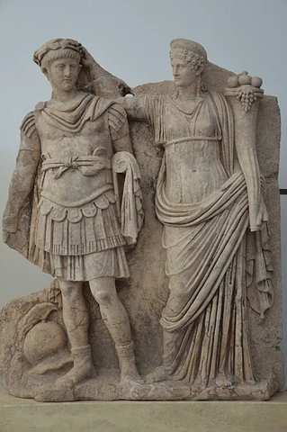
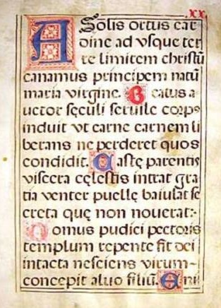
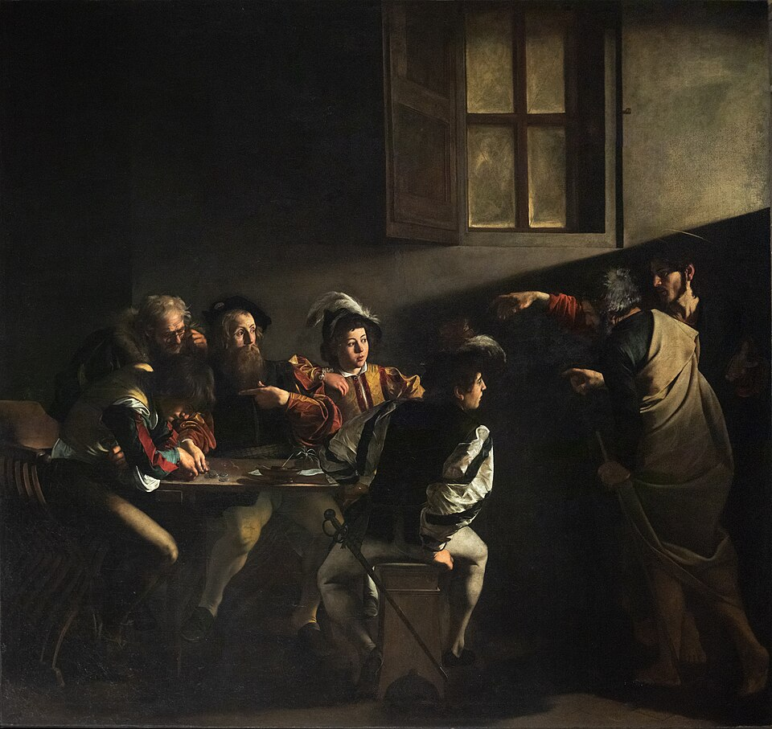
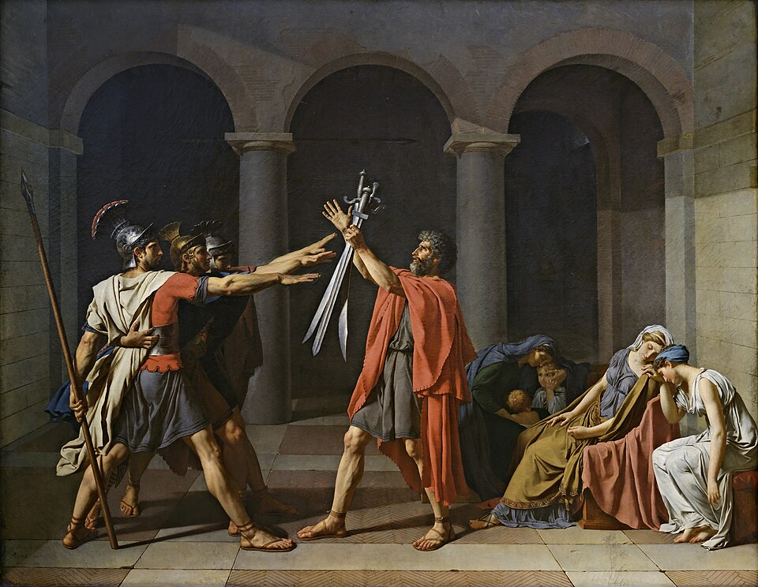
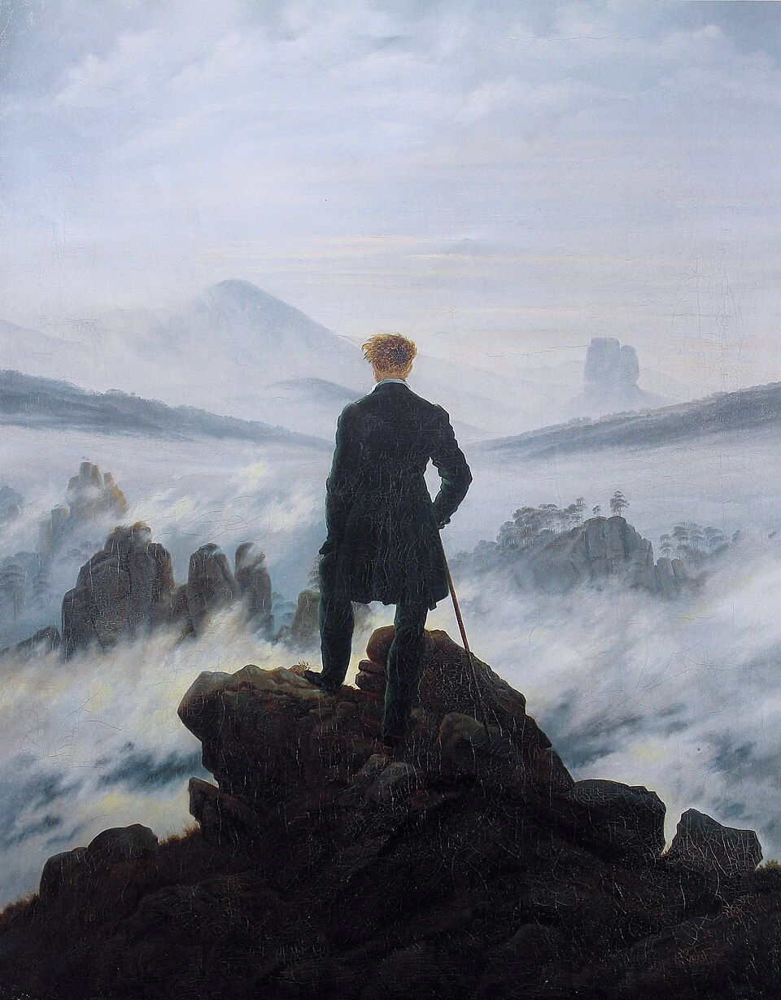
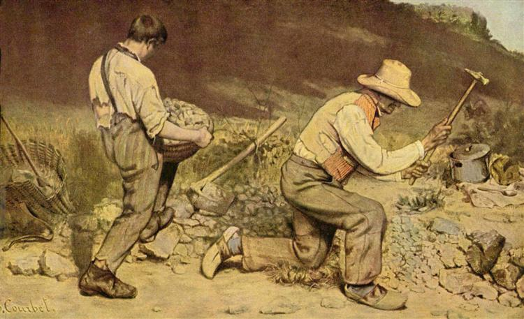
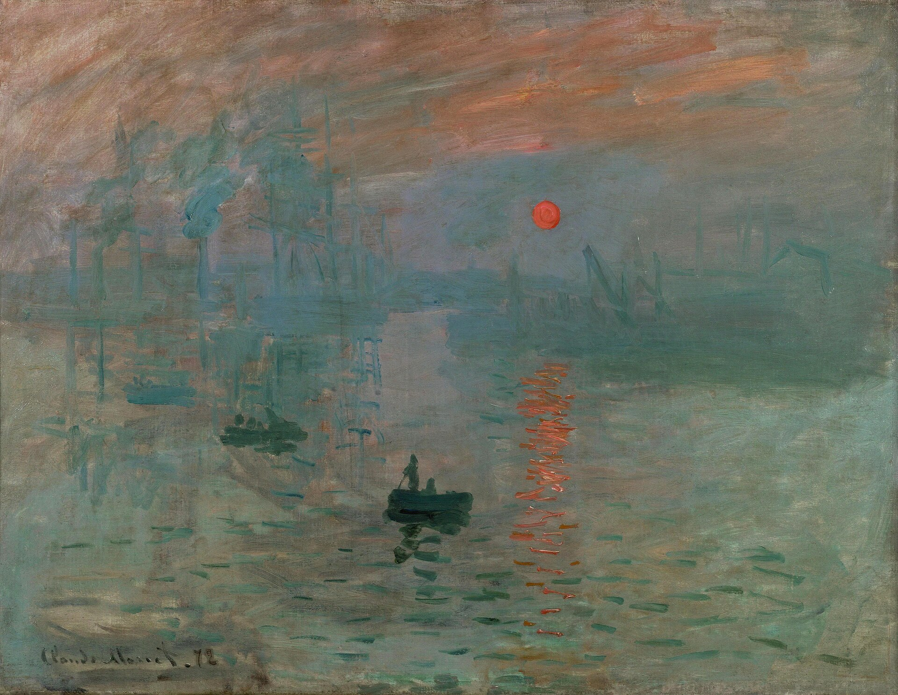
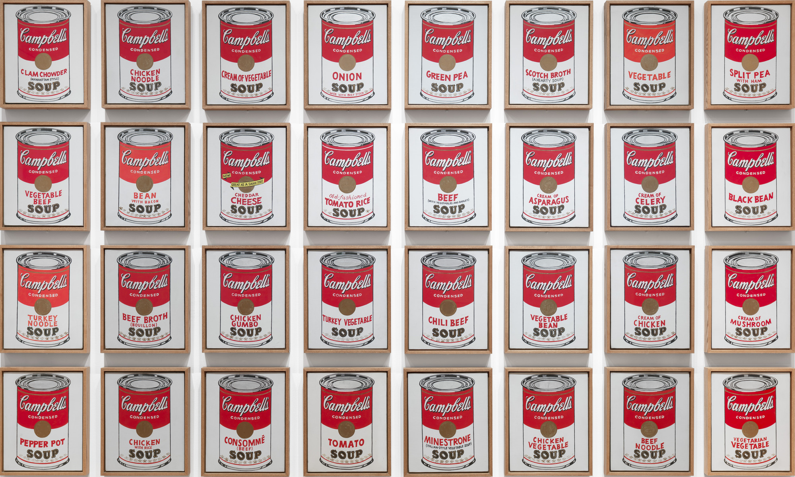

Here would be a short walkthrough of the history of Art. Discover the long history of art and learn how Art evolve through the ages:
← Swipe left
GREEK & ROMAN PERIOD (800 BCE - 400 AD)

Relief from the Sebasteion depicting Nero and his mother, Agrippina
Way back in prehistoric period, the earliest art forms were discovered-- mainly rock carvings, sculptures, and engravings.
Based on the caves of Lascaux found in France, humans of the prehistoric period had used natural pigments and stone carvings in which represented their civilization.
By the end of the prehistoric period then came the Greek and Roman period.
By these later years, art forms were heavily relied on religious beliefs, beauty, and symbolic imagery.
Art forms had also told stories and social statuses, depicting the rulers of the time.
RELIGIOUS MEDIEVAL (400 – 1350 AD)

Medieval illuminated manuscript, “A solis ortus cardine.” Author unknown. Image Courtesy of Wikimedia Commons.
The Medieval period followed the decline of the Roman Empire and was strongly influenced by Christianity and the Church.
Art mainly appeared in paintings, manuscripts, mosaics, tapestries, and religious architecture.
Different styles developed during this period, including Early Christian, Byzantine, Romanesque, and Gothic art.
Most artworks focused on religious stories, symbols, and spiritual beliefs rather than realistic representations.
Art during this period reflected the strong influence of religion on European society.
RENAISSANCE PERIOD ART (1350 – 1600 AD)
Raphael, “The School of Athens,” 1509–1511. Image Courtesy of Wikimedia Commons
Way back in prehistoric period, the earliest art forms were discovered-- mainly rock carvings, sculptures, and engravings.
Based on the caves of Lascaux found in France, humans of the prehistoric period had used natural pigments and stone carvings in which represented their civilization.
By the end of the prehistoric period then came the Greek and Roman period.
By these later years, art forms were heavily relied on religious beliefs, beauty, and symbolic imagery.
Art forms had also told stories and social statuses, depicting the rulers of the time.
ORNATE BAROQUE (1600–1750 AD)

Caravaggio, “The Calling of Saint Matthew,” c. 1599–1600. Image Courtesy of Wikipedia
The Baroque period was known for dramatic, detailed, and highly decorative art and architecture.
Artists used rich colors, strong contrasts, movement, and emotion to create a sense of drama.
Religious and political themes were common, especially during the Catholic Counter-Reformation.
Artists such as Rembrandt, Peter Paul Rubens, and Anthony van Dyck became important figures of the period.
The later Rococo style developed from Baroque and featured a lighter, more elegant, and decorative appearance.
LOGICAL NEOCLASSICAL (1750–1800)

Jacques-Louis David, “The Oath of the Horatii,” 1784. Image Courtesy of Wikipedia
Neoclassical art was inspired by the cultures and artistic ideals of Ancient Greece and Rome.
Artists emphasized simplicity, balance, proportion, and idealized beauty.
The movement focused on logic, order, and discipline.
Ancient ruins and classical sculptures became important sources of inspiration.
Neoclassicism was partly a reaction against the highly decorative style of Baroque and Rococo art.
PASSIONATE ROMANTIC (1800–1850)

Caspar David Friedrich, “Wanderer above the Sea of Fog,” c. 1817–1818. Image Courtesy of Wikimedia Commons.
Romanticism focused on emotion, imagination, individual expression, and the beauty of nature.
Artists moved away from the strict order and logic of Neoclassicism.
Dramatic landscapes, powerful emotions, and historical events became popular subjects.
Romantic art was also influenced by reactions to the Industrial Revolution and the Age of Enlightenment.
The movement emphasized personal feelings and the power of human imagination.
PRECISE REALISTIC (1850–1940s)

Gustave Courbet, “The Stone Breakers,” 1849–1850. Image Courtesy of WikiArt
Realism began in France and focused on representing everyday life as truthfully as possible.
Artists often depicted ordinary people, social conditions, and realistic subjects.
The movement was influenced by developments such as journalism and photography.
Artists rejected the idealized and emotional subjects often found in Romanticism.
Later movements, including Arts and Crafts, Folk Art, and American Regionalism, also reflected aspects of everyday life and society.
MODERN ART PERIOD (1850–1960s)

Claude Monet, “Impression, Sunrise,” 1872. Musée Marmottan Monet, Paris. Image Courtesy of Wikimedia Commons.
Modern art introduced new ideas, techniques, and ways of representing reality.
Artists began experimenting with color, form, emotion, and different artistic perspectives.
Important movements included Impressionism, Post-Impressionism, Symbolism, Art Nouveau, and Expressionism.
Artists became less focused on traditional subjects and more interested in personal expression and experimentation.
This period helped transform art and influenced many styles that followed.
CONTEMPORARY ART PERIOD (1960s–PRESENT)

Andy Warhol, “Campbell's Soup Cans,” 1962. Image Courtesy of MoMA.
Contemporary art represents the ongoing development of art from the 1960s to the present.
Artists explore a wide variety of ideas, materials, techniques, and subjects.
Major movements include Postmodernism, Pop Art, Op Art, Conceptual Art, and Minimalism.
Contemporary art often challenges traditional ideas about what can be considered art.
It continues to reflect modern society, culture, technology, and individual perspectives.